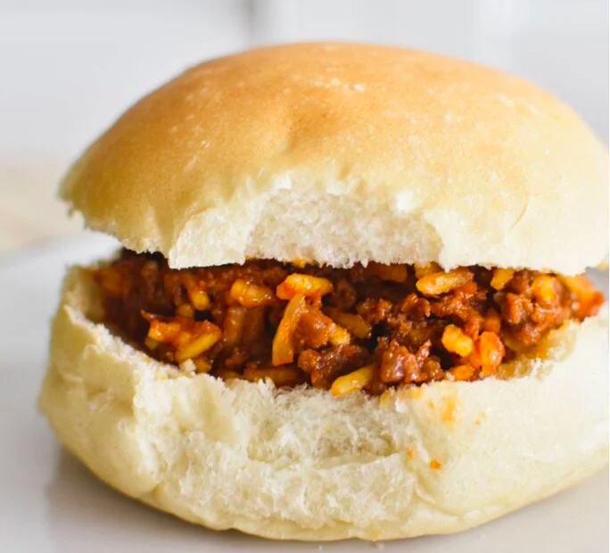

Odin Recipes
These are dishes from a sample list of countries from around the world.
To make this diverse, I decided to sample one nation from each continent.
THE SEVEN CONTINENT AND THE COUNTRIES SAMPLED FOR THEIR RECIPES
Here is a list of the all the seven continents in the world and the countries I samples from each continent to give you a link to recipes from there
LIST OF CONTINENTS
- AFRICA
- EUROPE
- NORTH AMERICA
- ASIA
- AUSTRALIA
- SOUTH AMERICA
- ANTARTICA
LIS OF COUNTRIES SAMPLED FROM EACH CONTINENT
- AFRICA - Nigeria
- EUROPE - United kingdom
- NORTH AMERICA - United States
- ASIA - India
- AUSTRALIA - Australia
- SOUTH AMERICA - Brazil
- ANTARTICA - France claimed zones
THE LINKS TO THE RECIPES FROM EACH COUNTRIES
- Nigeria -> -<>-JELLOF RICE -<>-

- United kingdom -> -<>- FISH AND CHIPS -<>-

- United States -> -<>- Buffalo chicken -<>-

- India -> -<>- Saag Paneer -<>-

- Australia -> -<>- AUSSIE BUNS -<>-

- Brazil -> -<>- Brazilian Vinaigrette Salsa -<>-

- France claimed zones -> -<>- Spinach and Goat Cheese Quiche -<>-